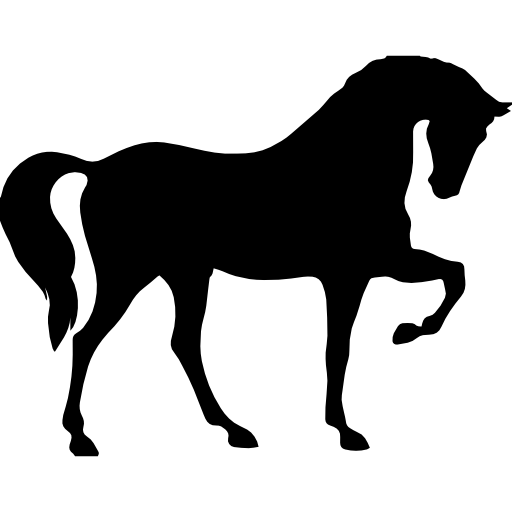
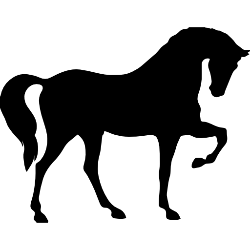

San Andrés es una isla colombiana del mar Caribe, frente a la costa de Nicaragua. Es conocida por los arrecifes de coral y la música reggae. La encendida playa Spratt Bight tiene un paseo costero bordeado de palmeras. En el litoral está el Parque Johnny Cay, una pequeña isla con mangles de cocos y playas de arena blanca. El Parque Regional de Mangle Old Point es un santuario de vida silvestre con cangrejos, iguanas y aves.


Melgar es una ciudad turística del suroeste de Bogotá, en el centro de Colombia. Se ubica junto al río de aguas bravas Sumapaz y es conocida por ser una base para los deportes de aventura. Al este de la ciudad, está la quebrada La Cajita, con piscinas naturales. El cerro Tablazo es un sitio de partida para el parapente con vista al valle. El parque ecológico Ciudad Reptilia alberga caimanes y tortugas. Al oeste está el parque acuático Piscilago, con piscinas, toboganes de agua y un pequeño zoológico.


Villavicencio es una ciudad del centro de Colombia, donde los Andes se juntan con la planicie de Los Llanos, al sureste de Bogotá. Es conocida por la danza del joropo y el deporte vaquero del coleo. La plaza principal, Parque de los Libertadores, tiene fuentes refrescantes y en ella se ubica la Catedral de Nuestra Señora del Carmen del siglo XIX. El Parque de los Fundadores tiene jardines y una altísima escultura. Al este, el parque Las Malocas recrea la vida en una aldea del valle con un rancho de ganado.